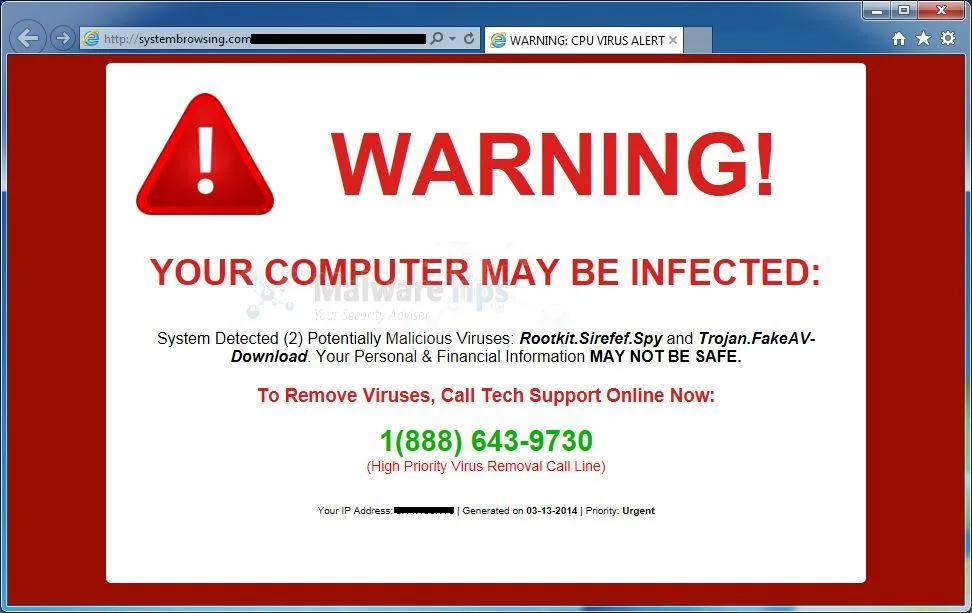
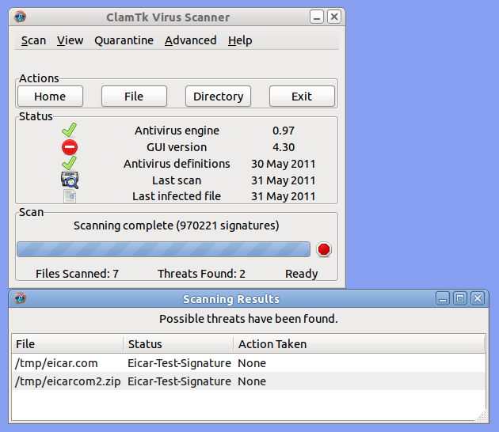

{kind=link}
We believe security software like Kicksecure needs to remain Open Source and independent. Would you help sustain and grow the project? Learn more about our 14 year success story and maybe DONATE!

For effective computer security it is crucial to construct a rough mental model of how the computer broadly functions on a technical level.
Mental Model Overview
Introduction
The majority of program code that is run on a computer is from diverse sources. Some software is sourced from "trusted" [1] vendors (out of necessity), while others stem from less-trusted or untrusted sources. The spectrum of trust arises because it is required for useful functionality in general computing. [2]
When a computer boots, there are four basic steps:
- If a computer is fully powered off and it previously did not have a battery or power cord connected, when it is powered on the first thing that occurs is the hardware initialization (which is invisible to the user).
- During the boot process, the first visible sign to the user is the BIOS. It is an essential skill to visually recognize the BIOS. [3]
- The next visible sign is the bootloader, such as grub on Linux.
- Disregarding intermediary steps, [4] the next visible sign most users will see is the operating system desktop environment.
By booting any computer with an operating system and associated software:
- The hardware, BIOS is ultimately trusted. [1]
- The operating system is highly trusted. [1] [5]
- Less trusted are applications like web browsers, for example Firefox, Chrome or Tor Browser.
- Least trusted are the contents shows by applications such as a website in a web browser.
Based on the simplified model above, it is therefore important to know which program code (application or program) usually [6] has associated permissions to draw windows in certain places.
Threat Assessment
When an appropriate mental model has been adopted, it becomes easier for users to detect legitimate threats or those which are most likely false alarms. As an example, consider the following image which is genuine.
Figure: Tor Browser DuckDuckGo Website in VirtualBox VM Utilizing Kicksecure Xfce

In contrast, the following image is an example of a scam which "alerts" the user with a false alarm.
Figure: Internet Explorer
systembrowsing.com Scam Popup in Windows
[7]

More experienced users with the proper mental model will quickly
categorize the systembrowsing.com alert as a scam. The
reason is systembrowsing.com is just a website inside the
browser window, without broader access to the user's operating system
(in order to possibly detect local viruses). [8]
It is important to mentally compartmentalize the different parts of a computer system:
- operating system:
Windows - application:
Internet Explorer - website:
systembrowsing.com(scam)
By adopting a skeptical mindset and the mental model above, experienced users quickly realize the image's warning cannot be trusted, solely because it states a virus has been detected; it is just text on a website. This means the website is also the source of the message, while the browser is just the messenger. Finally, the operating system and computer display the final message destination, but the message is not actually generated by a virus scanner.
Website messages stating your computer is infected with viruses or other malware are almost always false. This does not mean your computer is not actually infected, it could be for completely unrelated reasons. But even in this case the website would be unaware of it -- websites only have permission to show text, images or audio in the web browser. [9] Simply put, web browsers are neither designed, nor supposed to scan for viruses; if that was the case, it would be well documented.
Similar to bulk phishing attempts, scam websites that resort to these tactics do not usually possess the skill to exploit vulnerabilities in web browsers or operating systems. If they did, they would just compromise the victim's computer instead of relying on a ruse. [10] A highly skeptical user will disregard such messages, or possibly seek advice or conduct appropriate research before taking any action, thereby staying safe from such attacks. Always remember that various psychological techniques are relied upon by attackers (including urgent instructions), leading to security compromises.
The take-home messages is while users must trust their operating system and less so their applications, utmost skepticism should be the default position concerning claims made by websites. Users who are unaware of this concept remain a highly vulnerable target.
Best Practices
When any information, text, audio or image is displayed by the computer, consider the following questions:
- Which program code is likely generating this message?
- Which program code is likely drawing this window or part of it?
- Does this application have access to this information?
- How does this application have access to this information? [11]
This mental model is useful to avoid potential threats, and also helps to diagnose and fix issues. The concepts documented in the following, related wiki chapters can also deepen understanding of this topic: Social Engineering and (Spear) Phishing, Cryptocurrency Hardware Wallet: Threat Model and Login Spoofing.
As an example, the following ClamTK Virus Scanner screenshot is legitimate.
Figure: ClamTK Virus Scanner [12]

By asking the questions further above, a user will notice these are "real" windows. The window decoration (minimize to tray, maximize, close buttons) as well as the window itself are drawn by the operating system. Further, the ClamTK application is responsible for the window title and content of the window and has the necessary permissions to perform a scan of system files. For these reasons, greater trust can be placed in the application's output (scanning results).
See Also
- Threat Modeling
- Social Engineering and (Spear) Phishing
- Cryptocurrency Hardware Wallet: Threat Model
- Login Spoofing
- Malware
- very hard to notice Phishing Scam - Firefox / Tor Browser URL not showing real Domain Name - Homograph attack (Punycode)
External
- GeeksforGeeks: Threat Modelling
- Guide to Data-Centric System Threat Modeling
- Linddun: privacy threat modeling methodology
- Online Operations Security (OpSec)
- OWASP Cheat Sheet Series: Threat Modeling Cheat Sheet
- PASTA Threat Modeling
- Privacy Guides: What are threat models?
- Software Engineering Institute: Threat Modeling: 12 Available Methods
- STRIDE threat modeling
- Threat Modeling Manifesto
- https://imgs.xkcd.com/comics/authorization.png
Footnotes
- "Trusted" here refers to enforced trust, not because it is an individual decision to trust.
- In contrast, in the example of a classic washing machine -- without an Internet connection, sophisticated software or remote controls -- the only trusted program code by the washing machine vendor is that which is used to draw information on the display.
- Theoretically, when rebooting it is not guaranteed the real BIOS will present itself. It is possible a user could be presented with a fake reboot, whereby the real operating system keeps running normally but shows a graphical simulation of a full reboot sequence. However, there is no evidence this technique has ever been deployed in practice.
- Such as kernel initialization, initramfs or dracut, systemd, and single user mode in Linux.
- Unless there is hardware, firmware or BIOS level malware it is always possible to replace a compromised operating system with a clean operating system.
- Aside from malware-compromised code.
- https://malwaretips.com/blogs/systembrowsing-com-removal/
- The only exception to this rule is some special URLs in Firefox,
Chrome and Tor Browser such as
about:configorabout:preferences. Content of these is not generated by websites but by the browser itself. - Ignoring deprecated, dangerous technologies such as Internet Explorer with ActiveX.
- In other words, the attacker would not need to instruct users to compromise themselves.
- For example, browsers can ask for permission to use the microphone, or for access to the IP address to determine a user's location.
- https://en.wikipedia.org/wiki/ClamTk
Categories: Documentation